9 Exercise
9.1 Exercise 1 - Linear Algebra
9.1.1 Ex 1
A = matrix(c(4,7,2,5,3,8),2)
B = matrix(c(3,6,-2,9,4,-5),2)- \[ A + B = \]
A+B ## [,1] [,2] [,3]
## [1,] 7 0 7
## [2,] 13 14 3\[ A - B = \]
A-B## [,1] [,2] [,3]
## [1,] 1 4 -1
## [2,] 1 -4 13- \[ A' \times A = \]
t(A)%*%A## [,1] [,2] [,3]
## [1,] 65 43 68
## [2,] 43 29 46
## [3,] 68 46 73\[ A \times A' = \]
A%*%t(A)## [,1] [,2]
## [1,] 29 62
## [2,] 62 1389.1.2 Ex 2
A = matrix(c(1,2,3,-1),2)
B = matrix(c(2,1,0,5),2)- \[ A \times B = \]
A %*% B ## [,1] [,2]
## [1,] 5 15
## [2,] 3 -5\[ B \times A = \]
B %*% A## [,1] [,2]
## [1,] 2 6
## [2,] 11 -2- \[ det(A \times B) = \]
det(A %*% B )## [1] -70\[ det(A) = \]
det(A)## [1] -7\[ det(B) = \]
det(B)## [1] 109.1.3 Ex 3
A = matrix(c(1,2,5,2,4,10,3,6,15),3)
B = matrix(c(-1,-1,1,1,1,-1,-2,-2,2),3)
C = matrix(c(1,1,2,2,2,2,4,4,4),3)- \[ A \times B = 0 \]
A %*% B## [,1] [,2] [,3]
## [1,] 0 0 0
## [2,] 0 0 0
## [3,] 0 0 0A %*% B[,1]## [,1]
## [1,] 0
## [2,] 0
## [3,] 0- \[ tr(A)\]
psych::tr(A)## [1] 20\[ tr(B)\]
psych::tr(B)## [1] 2It is important to notice that the matrix A is a matrix in which all of its vectors are linear dependent - aka they are all in the same span:
drawMatrixWithDet(A, dim(A)[1])## Warning: 'mesh3d' objects don't have these attributes: 'mode', 'line'
## Valid attributes include:
## 'type', 'visible', 'showlegend', 'legendgroup', 'opacity', 'name', 'uid', 'ids', 'customdata', 'selectedpoints', 'hoverinfo', 'hoverlabel', 'stream', 'transforms', 'x', 'y', 'z', 'i', 'j', 'k', 'text', 'delaunayaxis', 'alphahull', 'intensity', 'color', 'vertexcolor', 'facecolor', 'cauto', 'cmin', 'cmax', 'colorscale', 'autocolorscale', 'reversescale', 'showscale', 'colorbar', 'flatshading', 'contour', 'lightposition', 'lighting', 'xcalendar', 'ycalendar', 'zcalendar', 'scene', 'idssrc', 'customdatasrc', 'hoverinfosrc', 'xsrc', 'ysrc', 'zsrc', 'isrc', 'jsrc', 'ksrc', 'textsrc', 'intensitysrc', 'vertexcolorsrc', 'facecolorsrc', 'key', 'set', 'frame', 'transforms', '_isNestedKey', '_isSimpleKey', '_isGraticule', '_bbox'No, the graph is not wrong. All of the vectors are in the same span.
And since they are linear dependent, the determinant is 0.
\[ det(A)\]
det(A)## [1] 09.2
A <- matrix(c(3,1,1,1,0,2,1,2,0),3)
eigenObj <- eigen(A)
Lambda <- eigenObj$values*diag(3)
P <- eigenObj$vectors
Pline <- t(P)
A.spectralDecomp <- P%*%(Lambda)%*%Pline
A.spectralDecomp.2 <- matrix(rep(0,9),3)
for(i in 1:nrow(Lambda)){
A.spectralDecomp.2 = A.spectralDecomp.2 + eigenObj$values[i]*P[,i]%*%t(P[,i])
}9.3 11
dados11 <- as.data.frame(readxl::read_xlsx(file.path(datasetsDir,"..","Exercicios","exe11.xlsx"), col_names=F))
plot(x=dados11$X__1,y=dados11$X__2)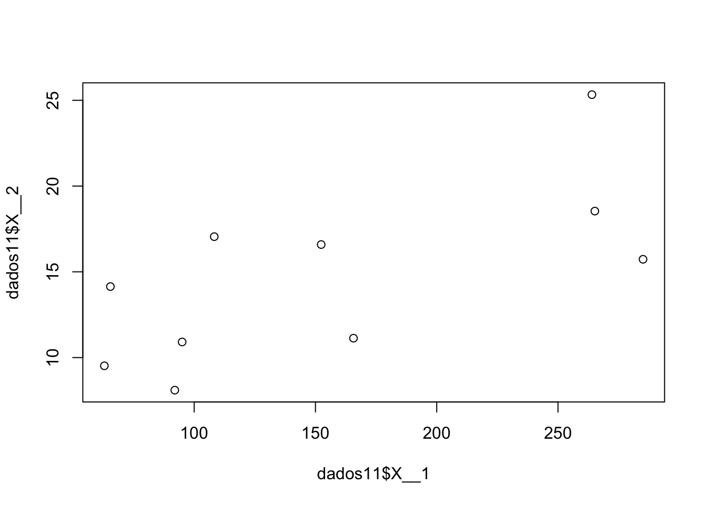
plot(x=dados11$X__1,y=dados11$X__3)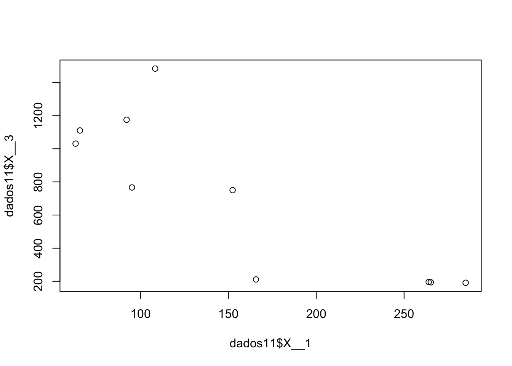
plot(x=dados11$X__2,y=dados11$X__3)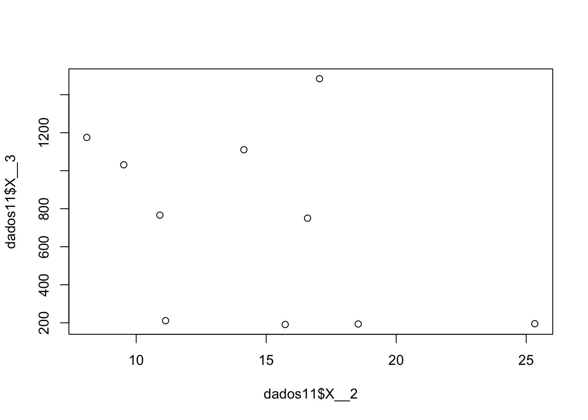
xbars <- colMeans(dados11)
S <- var(dados11)
CorrMatrix <- cor(dados11)9.4 12
dados12 <- as.data.frame(readxl::read_xlsx(file.path(datasetsDir,"..","Exercicios","exe12.xlsx"), col_names=F))
plot(x=dados12$X__1,y=dados12$X__2)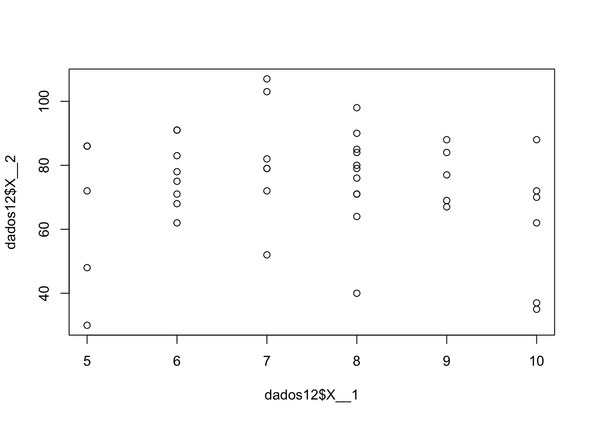
plot(x=dados12$X__5,y=dados12$X__3)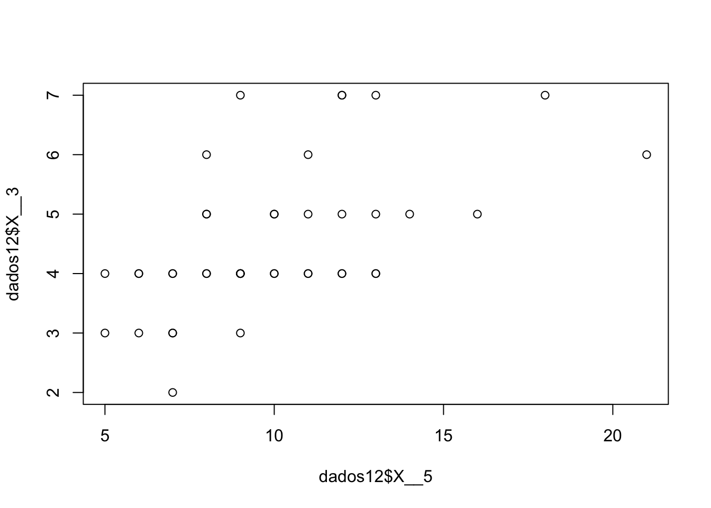
plot(x=dados12$X__2,y=dados12$X__3)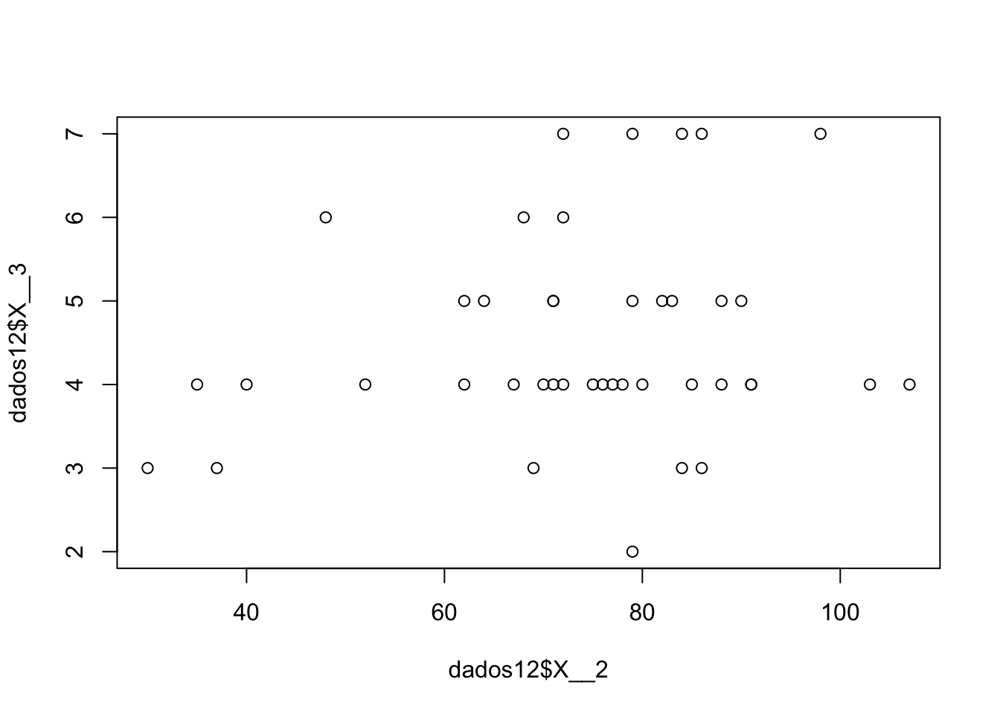
xbars <- colMeans(dados12)
S <- var(dados12)
CorrMatrix <- cor(dados12)9.5 13
dados13 <- as.data.frame(readxl::read_xlsx(file.path(datasetsDir,"..","Exercicios","exe13.xlsx"), col_names=F))
xs <- c(1,2,3)
ys <- c(4,5)
xsbar <-colMeans(dados13[,xs])
ysbar <-colMeans(dados13[,ys])
S <- var(dados13)
S11 <- S[xs,xs]
S12 <- S[xs,ys]
S21 <- S[ys,xs]
S22 <- S[ys,ys]9.6 14
dados13 <- as.data.frame(readxl::read_xlsx(file.path(datasetsDir,"..","Exercicios","exe13.xlsx"), col_names=F))
cLinear <- c(3,-2,4,-1,1)
xbar <- colMeans(dados13)
S <- var(dados13)
R <- cor(dados13)
zmeans <- t(cLinear)%*%xbar
zS <- cLinear%*%S%*%cLinear
#z = 3x1 ??? 2x2 + 4x3 ??? x4 + x5 .
C <- matrix(c(1,2,-1,1,-3,-2,1,1,1,1,-2,-2,1,-1,3),3)
z_M_means <- C%*%xbar
Sz <- C%*%var(dados13)%*%t(C)
D <- sqrt(diag(Sz))*diag(3)
Dinv <- solve(D)
Ry <- Dinv%*%Sz%*%Dinv9.7 15
dados13 <- as.data.frame(readxl::read_xlsx(file.path(datasetsDir,"..","Exercicios","exe13.xlsx"), col_names=F))
cLinear <- c(3,-2,4,-1,1)
xbar <- colMeans(dados13)
S <- var(dados13)
R <- cor(dados13)
S.eigen <- eigen(S)
S.det <- prod(S.eigen$values)
S.tr <- sum(S.eigen$values)
R.det <- det(R)9.8 16
dados16 <- as.data.frame(readxl::read_xlsx(file.path(datasetsDir,"..","Exercicios","exe16.xlsx"), col_names=F))
dados16.xbar <- colMeans(dados16)
dados16.S <- var(dados16)
dados16.R <- cor(dados16)
dados16.S.det <- det(dados16.S)
dados16.S.tr <- sum(diag(dados16.S))
#z=x1+2x2+x3???3x4
a <- c(1,2,1,-3)
z <- t(a%*%t(dados16))
#w=???2x1+3x2???x3+2x4
b <- c(-2,3,-1,2)
w <- t(b%*%t(dados16))
zbar <- a%*%dados16.xbar
wbar <- b%*%dados16.xbar
z.variance <- a%*%dados16.S%*%a
w.variance <- b%*%dados16.S%*%b
corr_between_z_w <- (a%*%dados16.S%*%b)/(sqrt(a%*%dados16.S%*%a)*sqrt(b%*%dados16.S%*%b))9.9 17
M <- matrix(c(-1,2,5,3,4,2,-2,2,3),3)
Ones <- matrix(c(1,1,1,1,1,1,1,1,1),3)
colMeans(M) -> M.colMeans
M - Ones*M.colMeans## [,1] [,2] [,3]
## [1,] -3 1 -4
## [2,] -1 1 -1
## [3,] 4 1 2Smatrixes <- 1/(dim(M)[1]-1)*t(M)%*%(diag(dim(M)[1]) - (1/dim(M)[1])*Ones)%*%M
det(Smatrixes)## [1] 2.173262e-14prod(eigen(Smatrixes)$values)## [1] 7.226065e-15sum(eigen(Smatrixes)$values)## [1] 179.10 18
TODO Question: How do I calculate the S_uv?
dados18 <- as.data.frame(readxl::read_xlsx(file.path(datasetsDir,"..","Exercicios","exe18.xlsx"), col_names=F))
dados18.S <- var(dados18)
UC <- matrix(c(1,1,1,-2,1,2,0,0,0,0,0,0),2)
VC <- matrix(c(0,0,0,0,0,0,0,0,0,3,-1,2,1,-2,-3,-2,1,1),3)
U.S <- UC%*%dados18.S%*%t(UC)
V.S <- VC%*%dados18.S%*%t(VC)9.11 19
dados19 <- as.data.frame(readxl::read_xlsx(file.path(datasetsDir,"..","Exercicios","exe19.xlsx")))
dados19.xbar <- colMeans(dados19)
getStats <- function(data){
statsAlturas <- summary(data)
return(
list(
mean = statsAlturas[4],
var = var(data),
sd = sd(data),
min = statsAlturas[1],
max = statsAlturas[6],
quartis = c(statsAlturas[2],statsAlturas[3],statsAlturas[5])
)
)
}
Alturas <- getStats(c(dados19$AlturasA,dados19$AlturasB))
Pesos <- getStats(c(dados19$PesosA,dados19$PesosB))
plts <- sapply(colnames(dados19),function(col){
hist(dados19[,col],breaks=20, main=paste0("Histogram of ",col))
})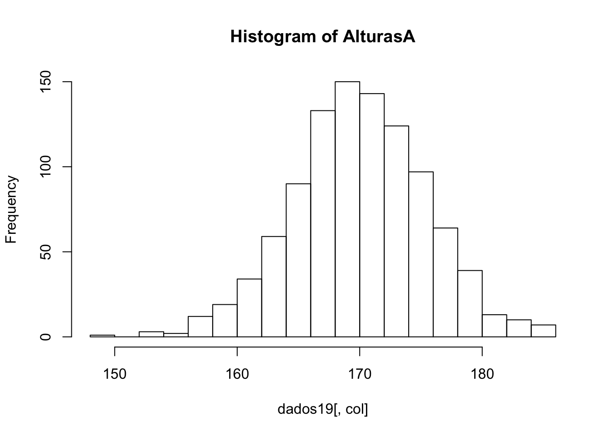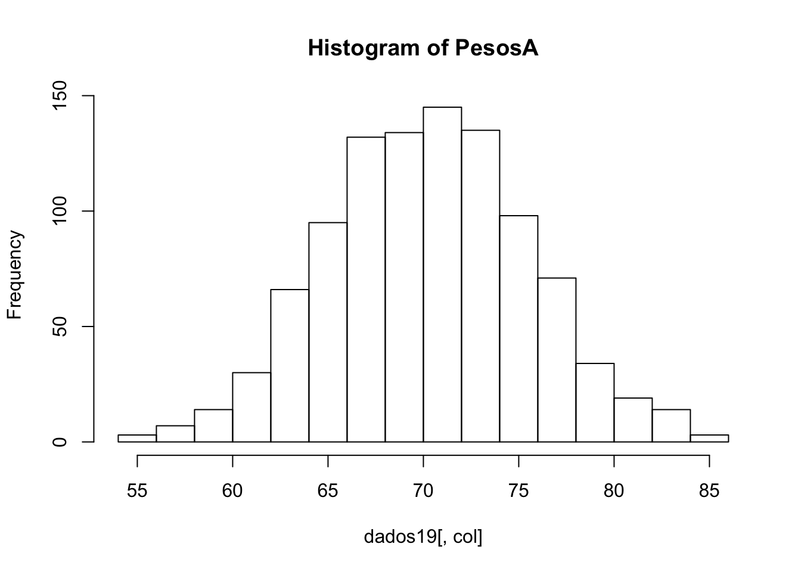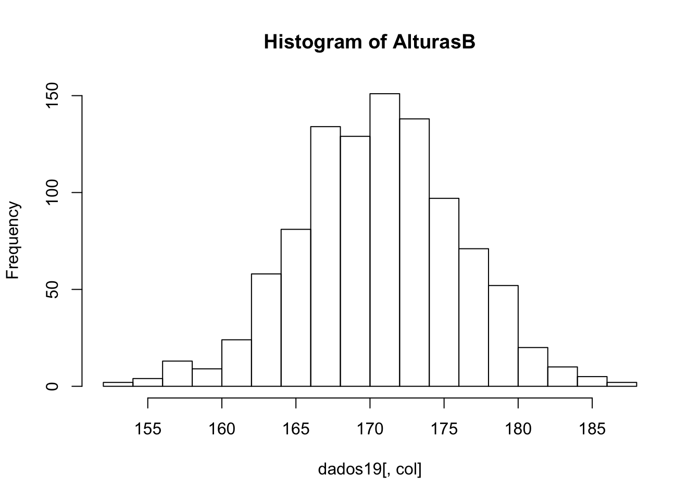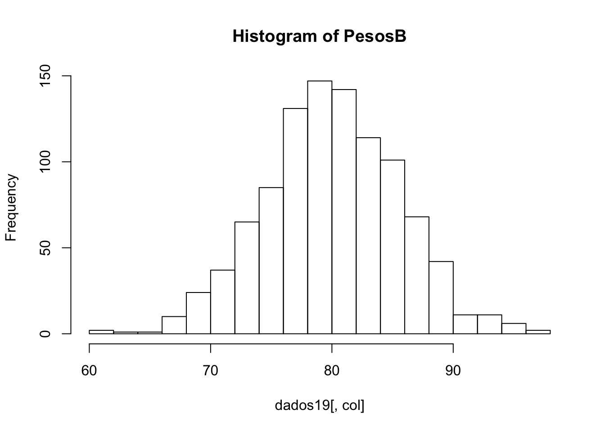
plts <- sapply(colnames(dados19),function(col){
boxplot(dados19[,col],breaks=20, main=paste0("Histogram of ",col))
})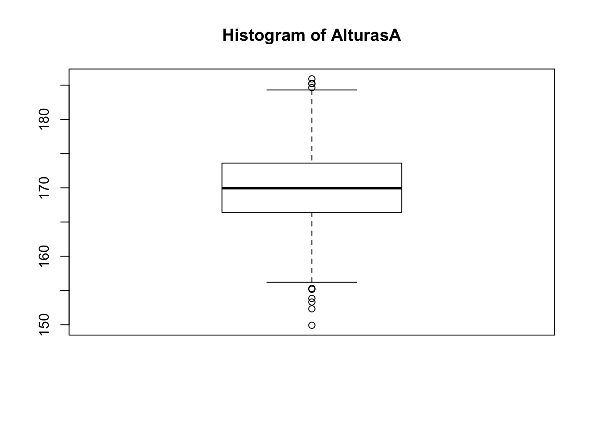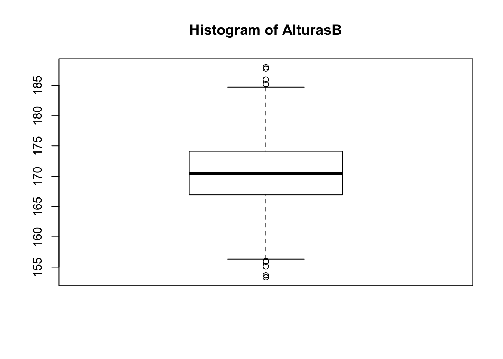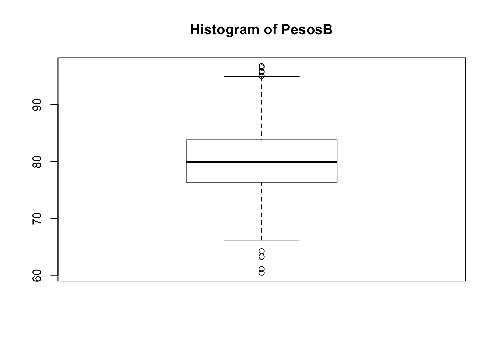
H0_populationalMean <- 170
alpha <- 0.05
testStats <- function(populationMean, sampleMean, sampleVar, sampleSize){
(sampleMean-populationMean)/(sampleVar/sqrt(sampleSize))
}
tObs <- testStats(H0_populationalMean, mean(dados19$AlturasA), var(dados19$AlturasA), length(dados19$AlturasA))
abs(tObs) > qt(1-alpha,length(dados19$AlturasA)-1)## [1] FALSEp_value <- (1 - pt(abs(tObs),length(dados19$AlturasA)-1))*2
p_value < 1-pt(1-alpha/2,length(dados19$AlturasA)-1)## [1] FALSEH0_populationMean.pesos <- 70
tObs.pesosA <- testStats(H0_populationMean.pesos, mean(dados19$PesosA), var(dados19$PesosA), length(dados19$PesosA))
abs(tObs.pesosA) > qt(1-alpha,length(dados19$PesosA)-1)## [1] FALSEp_value.pesosA <- (1 - pt(abs(tObs.pesosA),length(dados19$PesosA)-1))*29.12 24
matrix20 <- matrix(c(3,4,5,4,6,4,7,7),4)
mewPop <- colMeans(matrix20)
SigmaPop <- (dim(matrix20)[1]-1)*(var(matrix20)/dim(matrix20)[1])9.13 25
Chi Sqrt with 6 freedom degrees
matrix20 <- matrix(c(3,4,5,4,6,4,7,7),4)
mewPop <- colMeans(matrix20)
SigmaPop <- (dim(matrix20)[1]-1)*(var(matrix20)/dim(matrix20)[1])1+1